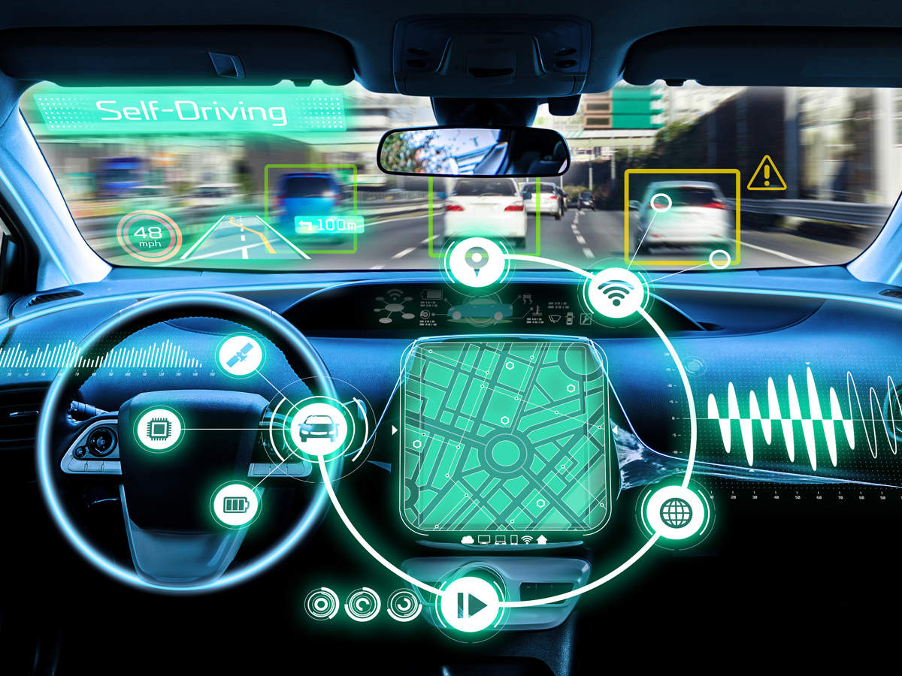
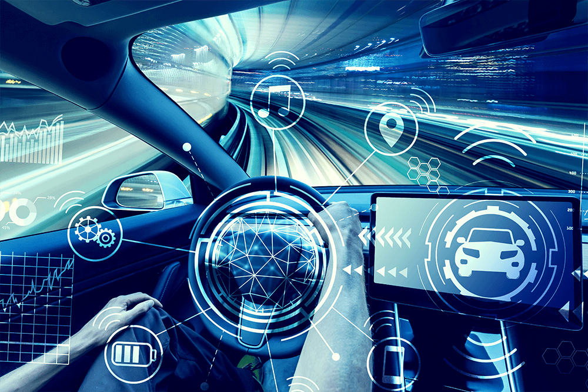

What is a self-driving car?
A self-driving car is capable of sensing its environment and navigating without human input.To accomplish this task,each vehicle is usually outfitted with a GPS unit,an inertial navigation system,and a range of sensors including lasers rangefinders,radar and video.The vehicle uses positional information from the GPS and inertial navigation system to localize itself and sensor data to refine its position estimate as well as to build a three dimensional image of its environment.Data from each sensor is filtered to remove noise and often fused with other data sources to augment the original image.How the vehicle subsequently uses this data to make navigation decisions is determined by its control system.
How it works
The majority of self-driving vehicle control systems implement a deliberative architecture,meaning that they are capable of making intelligent decisions by 1)maintaining an internal map of their world and 2)using that map to find an optimal to their destination that avoids obstacles (e.g roads structures, pedestrian and other vehicles) from a set of possible paths.Once the vehicle determines the best path to take,the decisions is dissected into commands, which are fed to the vehicle's actuators. These actuators control the vehicle's steering,braking and throttle.This process of localization,mapping,obstacle avoidance and path planning is repeated multiple times each second on powerful on-board processors until the vehicle reaches its destination.
The next section focuses on the technical components of each process:mapping and localization, obstacle avoidance and path planning. Although car manufacturers use different sensor suites and algorithms depending on their unique cost and operational constraints,the processes across vehicles are similar.The descriptions below most closely mirror their implementation in state-of-the-art self-driving military vehicles.
Breaking Down the Technicals
Mapping and localization
Prior to making any navigation decisions,the vehicle must first build a map of its environment and precisely localize itself within that map.The most frequently used sensors for map building
are laser rangefinders and cameras.A laser rangerfinder scans the environment using swaths of laser beams and calculates the distances to nearby objects by measuring the time it takes for each laser
beam to travel to the object and back.Where video from camera is ideal for extracting scene color,an advantage of laser rangefinders is that depth information is readily available to the vehicle for building
a three-dimensional map.Because laser beams diverge as they travel through space,it is difficult to obtain accurate distance readings greater than 100m away using most state-of-the-art laser rangefinders,which
limits the amount of reliable data that can be captured in the map.The vehicle filters and discretizes data collected from each sensor and often aggregates the information to create a comprehensive map,which can
then be used for path planning.
For the vehicle to know where it is in relation to other objects in the map,it must use its GPS,inertial navigation unit and sensors to precisely localize itself.GPS estimates can be off by many meters due to signal delays
caused by changes in the atmosphere and reflections off of building and surrounding terrain and inertial navigation units accumulate position errors overtime.
Therefore localization algorithms will often incorporate map or sensor data previously collected from the same location to reduce uncertainty.As the vehicle moves,new positional
information and sensor data are used to update the vehicle's internal map.
Obstacle Avoidance
A vehicle's intenal map includes the current and predicted location of all static(e.g. buildings,traffic lights,stop signs) and moving(e.g. other vehicles and pedestrians) obstacles in its vicinity. Obstacles are categorized depending on how well they match up with a library of pre-determined shape and motion descriptors.The vehicle uses a probabilistic model to track the predicted future path of moving objects based on its shape and prior trajectory.For example,if a two-wheeled object is travelling at 40 mph versus 10 mph, it is most likely a motorcycle and not a bicycle and will get categorized as such by the vehicle. This process allows the vehicle to make more intelligent decisions when approaching crosswalks or busy intersections.The previous,current and predicted future locations of all obstacles in the vehicle's vicinity are incorporated into its internal map,which the vehicle then uses to plan its path.
Path Planning
The goal of path planning is to use the information captured in the vehicle's map to safely direct the vehicle to its destination while avoiding obstacles and following the rules of the road.Although manufacturers' planning algorithms
will be different based on their navigation objectives and sensors used,the following describes a general path planning algorithm which has been used on military ground vehicles.
This algorithm determines a rough long-range plan for the vehicle to follow while continuously refining a short-range plan (e.g. change lanes,drive forward 10m,turn right).It starts from a set of short-range paths that the vehicle
would be dynamically capable of completing given its speed,direction and angular position and removes all those that would either cross an obstacle or come too close to the predicted path of a moving one.
For example a vehicle travelling at 50 mph would not be able to safely complete a right turn 5 meters ahead,therefore that path would be eliminated from the feasible set.Remaining paths are evaluated based on safety,speed and any time requirements.
Once the best path has been identified,a set of throttle,brake and steering commands, are passed on to the vehicle's on-board processors and actuators.Altogether,this process takes
on average 50ms,although it can be longer or shorter depending on the amount of collected data,available processing power and complexity of the path planning algorithm.
The process of localization,mapping,obstacle detection and path planning is repeated until the vehicle reaches its destination.
The Road Ahead
Car manufacturers have made significant advances in the past decade towards making self-driving cars a reality; however ,there still remain a number of technological barriers that manufacturers must overcome before self-driving vehicles are safe enough for
road use.GPS can be unreliable,computer vision systems have limitations to understanding road scenes, and variable weather conditions can adversely affect the ability of on-board processors
to adequately identify or track moving objects.Self-driving vehicles have also yet to demonstrate the same capability as human drivers in understanding and navigating unstuctured envirinments such
as construction zones,
These barriers though are not insurmountable.The amount of road and traffic data available to these vehicles is increasing,newer range sensors are capturing more data and the algorithms for interpreting
road scenes are evolving.The transition from human-operated vehicles to fully self-driving cars will be gradual,with vehicles at first performing only a subset of driving tasks such parking and driving in stop-and-go traffic
autonomously.As the technology improves,more driving tasks can be reliably outsourced to the vehicle.